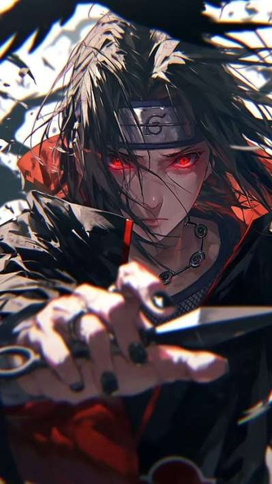
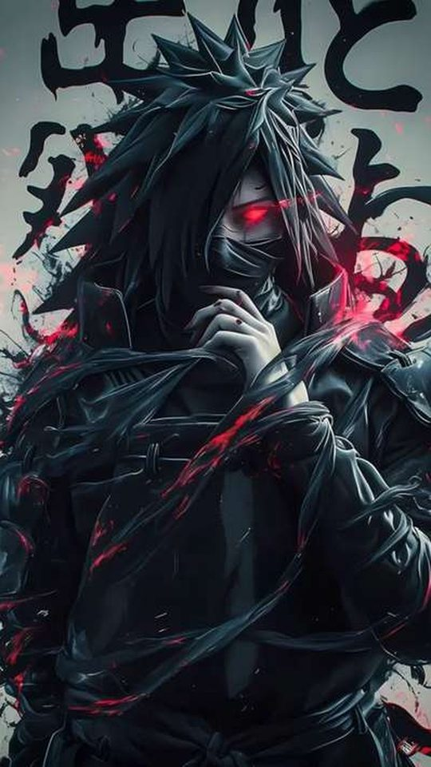
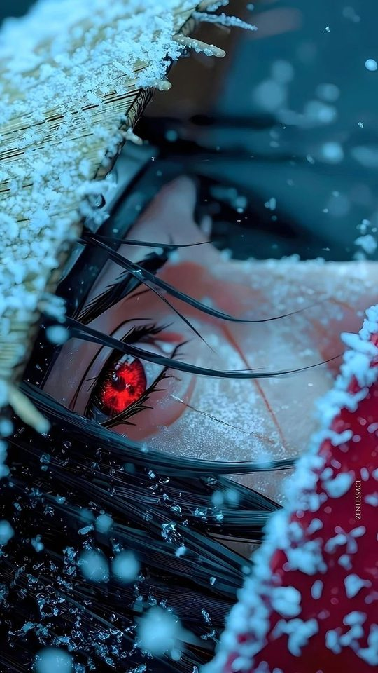
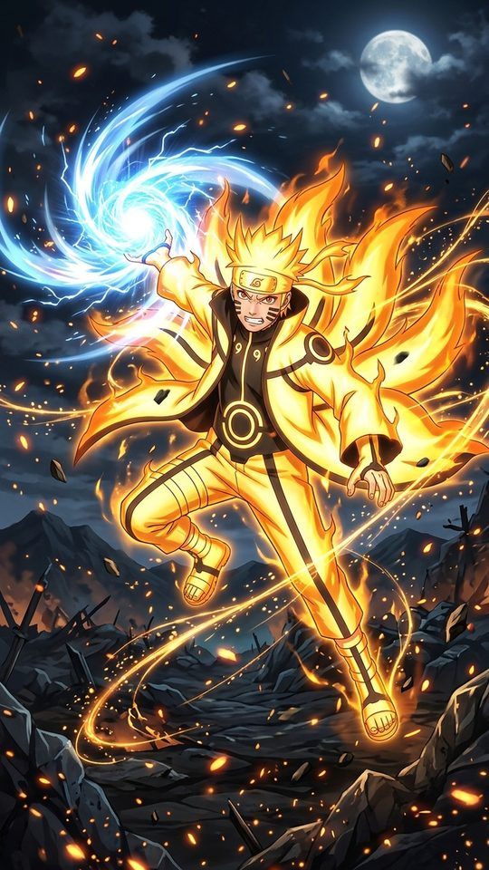

Naruto vs Boruto: Which Characters Make Better Wallpapers?

Naruto and Boruto are set in the same world but drawn in two very different visual languages, and that difference shows up the moment you put them side by side on a phone screen. This guide compares the two eras directly, looking at Naruto, Sasuke, Kakashi, Itachi and Sarada, and explaining how the older linework and colouring sit next to the newer style. By the end you will know which era's art crops more cleanly to a portrait phone and which characters are worth hunting for in each.
Two eras, two visual languages
The Naruto anime began in the early 2000s, and its look was shaped by the production tools of the time. Colours are flatter and a little softer, the digital compositing is gentler, and the linework is thinner and slightly rougher. Shippuden tightens this up, pushing contrast higher and darkening the overall palette, but it still belongs to the same family: warm earth tones, muted greens and browns, and a lot of open sky.
Boruto, which began in 2017, was produced in a fully digital, high-definition pipeline. Linework is cleaner and more uniform, colours are brighter and more saturated, shading uses softer digital gradients, and backgrounds carry more detail. Characters are drawn with slightly sharper features and a smoother finish. On a phone, that translates into images that look crisper and upscale better, at the cost of some of the hand-drawn texture that older fans associate with the series.
Naruto across both eras
Naruto is the clearest way to see the two styles side by side, because he appears in both. As a teenager he is built on a loud orange jumpsuit with blue accents and spiky blond hair, a palette that is bold enough to be visible from across a room. Orange is a strong lock-screen colour, though it can compete with red notification badges. His Sage Mode adds a ring of red around the eyes, and his Six Paths and Baryon Mode states push the orange and red into a glowing, highly saturated look that reads well on a dark background.
The adult Naruto of the Boruto era is a different proposition. His hair is shorter, his jacket is black with orange detailing, and his Hokage cloak is white with red trim. The palette is more restrained and more grown up, which makes it easier to place behind icons. It is a good choice if you want a Naruto wallpaper that does not shout.

Sasuke and Itachi: the Uchiha palette
The Uchiha give you the highest-contrast images in either era. Sasuke's black hair and dark clothing sit against pale skin, and his eyes supply the colour: the red of the Sharingan and the purple of the Rinnegan. Red and purple against black is one of the most striking combinations in the whole series, and it separates cleanly from a dark phone theme. In the Boruto era Sasuke is drawn with the same dark palette but sharper, cleaner lines, and his single Rinnegan and the scarred eye are usually the focus of the frame.
Itachi is arguably the most wallpaper-friendly character of all. The Akatsuki cloak, black with red clouds, is a near-perfect background design: bold, simple and readable at any size, and the red-on-black pattern gives a portrait frame structure even when the figure is cropped. His Sharingan adds a small, bright focal point that pulls the eye to the centre of the screen.
Kakashi: the neutral, low-clutter choice
Kakashi is the quiet option. Silver-grey hair, a dark blue mask and outfit, a green flak vest and one visible Sharingan eye make for a muted, low-clutter palette that behaves itself behind a busy home screen. A close crop showing just the masked face and the single eye is one of the most effective portrait compositions in the series, because the shape is simple and the eye gives the image a clear centre. In the Boruto era he appears older and calmer, with the same palette but crisper lines, and those images tend to upscale more gracefully to a high-resolution screen.

Sarada and the new generation
Sarada is the best argument for the Boruto art style. Her black hair, red glasses and red-and-black outfit give her a strong, simple palette, and the brighter colouring of the newer era makes both her glasses and her Sharingan pop without looking muddy. Because Boruto was made in high definition, Sarada images are typically sharper and hold up better when cropped to a tall phone screen. If you want a character who reads clearly at small sizes and carries a clean, modern look, she is a strong pick.

Which era crops better to a phone?
On pure image quality, the Boruto era wins. It was produced at higher resolution with cleaner lines and more even colouring, so its images crop and upscale better on a modern phone. Naruto and Shippuden art is often softer, and some of it was framed for a squarer television picture, which means you sometimes have to crop aggressively to fill a tall screen.
But quality is not the same as character. The Naruto era has the more distinctive palettes, the warmer and more textured colour, and the compositions built around open sky and negative space that can actually suit a portrait crop very well. The honest answer is to mix them: use Boruto-era art when you want sharpness, and Naruto-era art when you want mood.
A few practical tips make either era easier to work with on a phone:
- Choose your target ratio first, aiming for roughly 9:19.5, before you decide where to crop.
- Keep the character's eyes in the upper third so the clock and widgets never cover the face.
- When a source image is too narrow, fill the empty sides with a flat colour rather than stretching it.
- On a dark theme, lean toward Itachi, Sasuke and Shigaraki; on a light theme, Sarada and younger Naruto read best.
- Check the resolution before you commit, since older art can look soft once enlarged.
A side-by-side comparison
| Feature | Naruto / Shippuden era | Boruto era |
|---|---|---|
| Linework | Thinner, rougher, hand-drawn feel | Cleaner, more uniform |
| Colouring | Flatter, warmer, slightly muted | Brighter, more saturated, gradient shading |
| Resolution | Often lower, softer on large screens | High definition, upscales well |
| Framing | Sometimes squarer, more open sky | Widescreen, more detailed backgrounds |
| Best for | Mood and distinctive palettes | Sharpness and clean crops |
Frequently asked questions
Does the Boruto era make better wallpapers than the Naruto era?
For sharpness and clean crops, yes. Boruto was produced in high definition with cleaner lines and brighter colour, so its images hold up better when enlarged to a modern phone screen. The Naruto era still wins on mood and on distinctive, warm palettes, so the best choice depends on what you want the wallpaper to feel like.
Which Uchiha is best for a dark phone theme?
Itachi, mainly because the Akatsuki cloak is black with red clouds, a pattern that stays bold and readable no matter how you crop it. Sasuke is a close second, with red Sharingan and purple Rinnegan set against black, though his images often need a tighter crop to work in portrait.
Why does older Naruto art sometimes look blurry on a phone?
Much of the Naruto and Shippuden material was produced for a lower-resolution, squarer television picture. When that art is stretched to fill a tall, high-resolution phone screen, it loses detail. Boruto-era images start sharper and need less stretching.
Is Sarada a good wallpaper character?
She is one of the better picks from the newer era. Her black hair and red glasses make a strong, simple palette, and the brighter Boruto colouring makes her glasses and Sharingan stand out clearly. Her images are usually crisp enough to crop to portrait without losing detail.
Related reading
If you like fantasy anime with real political weight, we reviewed As a Reincarnated Aristocrat, I'll Use My Appraisal Skill to Rise in the World season by season: Season 1, Season 2, Season 3 (airing now), or start with the complete S1-S3 guide.